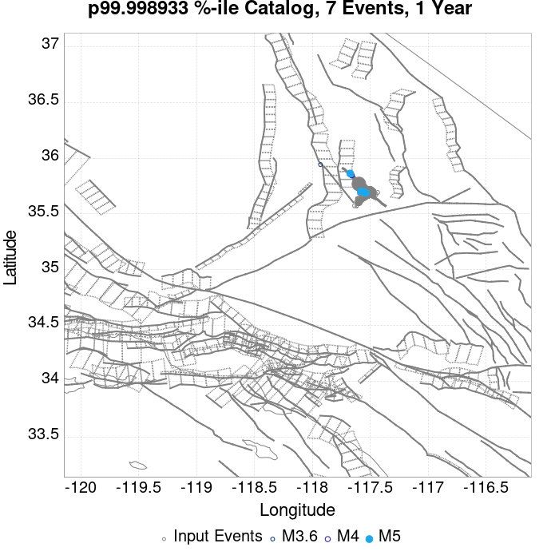
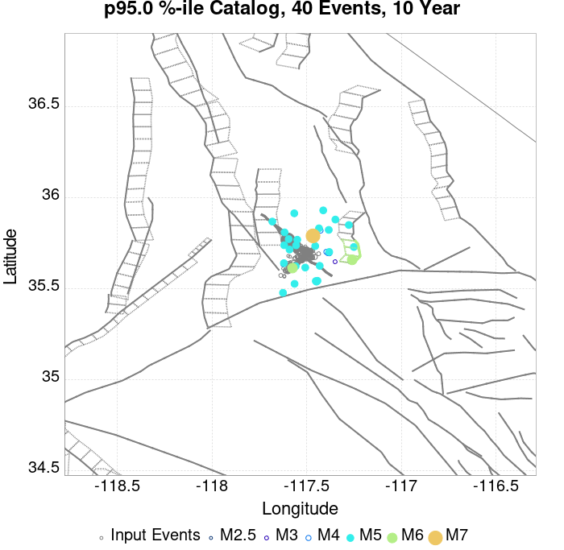
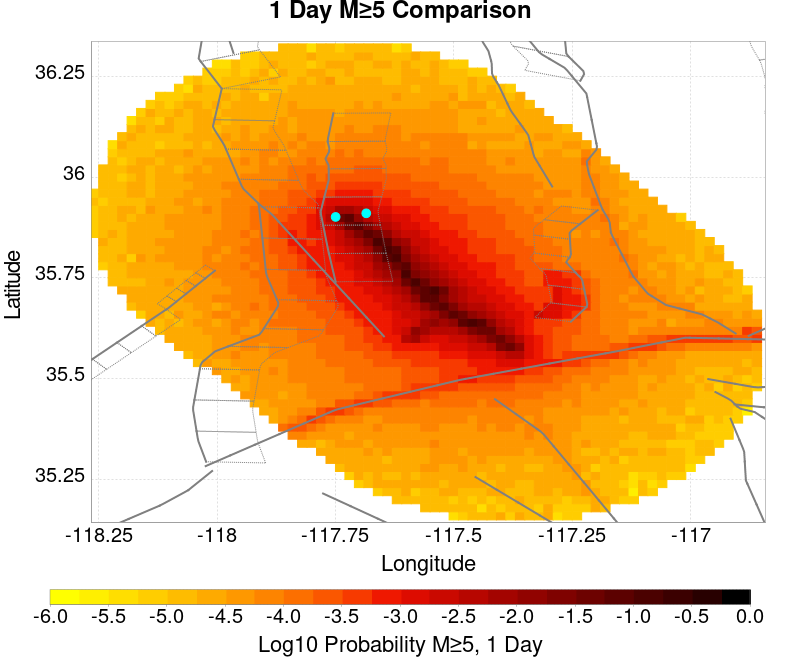

| ComCat M7.1 (ci38457511), ShakeMap Surfaces, FM2_1 | |
|---|---|
| Num Simulations | 93700 (incomplete) |
| Start Time | 2019/07/06 03:19:54 UTC |
| Start Time Epoch Milliseconds | 1562383194040 |
| Duration | 10 Years |
| Includes Spontaneous? | false |
| Trigger Ruptures | 283 Trigger Ruptures |
| First: M3.98 at 2019/07/04 17:02:55 UTC | |
| Last: M7.1 at 2019/07/06 03:19:53 UTC | |
| Largest: M7.1 at 2019/07/06 03:19:53 UTC | |
| Trigger Ruptures | (none) |
| Config Generated With | u3etas_comcat_event_config_builder.sh --event-id ci38457511 --mag-complete 3.5 --days-before 7 --num-simulations 1000000 --fault-model FM2_1 --finite-surf-shakemap --finite-surf-shakemap-min-mag 5 --hpc-site USC_HPC --nodes 36 --hours 24 --queue scec |
| Magnitude | 1 Hour Prob | 1 Day Prob | 1 Week Prob | 1 Month Prob | 1 Year Prob | 10 Year Prob |
|---|---|---|---|---|---|---|
| M≥5 | 0.768 (76.84%) | 0.977 (97.67%) | 0.995 (99.50%) | 0.998 (99.85%) | 1.000 (99.99%) | 1.000 (100.00%) |
| 95% Conf | [76.57% 77.11%] | [97.57% 97.76%] | [99.46% 99.55%] | [99.82% 99.87%] | [99.97% 99.99%] | [99.99% 100.00%] |
| M≥5.5 | 0.338 (33.79%) | 0.664 (66.41%) | 0.793 (79.31%) | 0.859 (85.94%) | 0.927 (92.69%) | 0.960 (95.96%) |
| 95% Conf | [33.48% 34.09%] | [66.11% 66.71%] | [79.05% 79.57%] | [85.71% 86.16%] | [92.53% 92.86%] | [95.83% 96.08%] |
| M≥6 | 0.082 (8.22%) | 0.210 (21.04%) | 0.295 (29.55%) | 0.358 (35.81%) | 0.457 (45.75%) | 0.537 (53.66%) |
| 95% Conf | [8.05% 8.40%] | [20.78% 21.30%] | [29.26% 29.84%] | [35.51% 36.12%] | [45.43% 46.07%] | [53.34% 53.98%] |
| M≥6.5 | 0.015 (1.49%) | 0.042 (4.21%) | 0.064 (6.41%) | 0.082 (8.17%) | 0.114 (11.43%) | 0.145 (14.51%) |
| 95% Conf | [1.41% 1.57%] | [4.08% 4.34%] | [6.25% 6.57%] | [8.00% 8.35%] | [11.23% 11.63%] | [14.29% 14.74%] |
| M≥7 | 3.96E-3 (0.40%) | 0.011 (1.06%) | 0.016 (1.59%) | 0.020 (2.04%) | 0.029 (2.95%) | 0.038 (3.84%) |
| 95% Conf | [0.36% 0.44%] | [1.00% 1.13%] | [1.51% 1.67%] | [1.95% 2.13%] | [2.84% 3.06%] | [3.71% 3.96%] |
| M≥7.1 | 3.15E-3 (0.31%) | 8.60E-3 (0.86%) | 0.013 (1.29%) | 0.017 (1.65%) | 0.024 (2.35%) | 0.031 (3.08%) |
| 95% Conf | [0.28% 0.35%] | [0.80% 0.92%] | [1.22% 1.37%] | [1.57% 1.74%] | [2.26% 2.45%] | [2.97% 3.19%] |
| M≥7.5 | 1.29E-3 (0.13%) | 3.55E-3 (0.36%) | 5.37E-3 (0.54%) | 6.91E-3 (0.69%) | 9.55E-3 (0.96%) | 0.012 (1.24%) |
| 95% Conf | [0.11% 0.15%] | [0.32% 0.40%] | [0.49% 0.59%] | [0.64% 0.75%] | [0.89% 1.02%] | [1.17% 1.31%] |
| M≥8 | 0.000 (0.00%) | 2.13E-5 (0.00%) | 3.20E-5 (0.00%) | 4.27E-5 (0.00%) | 8.54E-5 (0.01%) | 1.17E-4 (0.01%) |
| 95% Conf | [0.00% 0.01%] | [0.00% 0.01%] | [0.00% 0.01%] | [0.00% 0.01%] | [0.00% 0.02%] | [0.01% 0.02%] |
Legend
| Mag | Mean | 2.5 %ile | 97.5 %ile | Median | Mode | 10 yr Probability | 10 yr Prob 95% Conf | 10 yr Supra-Seis Prob | Primary Aftershocks Mean |
|---|---|---|---|---|---|---|---|---|---|
| M≥5 | 15.188 | 5.000 | 35.000 | 13.000 | 12.000 | 1.000 (100.00%) | [99.99% 100.00%] | 0.122 (12.17%) | 7.234 |
| M≥5.1 | 11.910 | 4.000 | 28.000 | 11.000 | 9.000 | 1.000 (99.98%) | [99.97% 99.99%] | 0.122 (12.17%) | 5.671 |
| M≥5.2 | 9.313 | 2.000 | 23.000 | 8.000 | 7.000 | 0.999 (99.87%) | [99.84% 99.89%] | 0.122 (12.17%) | 4.435 |
| M≥5.3 | 7.246 | 1.000 | 19.000 | 6.000 | 5.000 | 0.995 (99.45%) | [99.40% 99.50%] | 0.122 (12.17%) | 3.447 |
| M≥5.4 | 5.609 | 1.000 | 15.000 | 5.000 | 4.000 | 0.984 (98.40%) | [98.32% 98.48%] | 0.122 (12.17%) | 2.669 |
| M≥5.5 | 4.311 | 0.000 | 12.000 | 4.000 | 3.000 | 0.960 (95.96%) | [95.83% 96.08%] | 0.122 (12.17%) | 2.049 |
| M≥5.6 | 3.280 | 0.000 | 10.000 | 3.000 | 2.000 | 0.917 (91.74%) | [91.57% 91.92%] | 0.122 (12.17%) | 1.559 |
| M≥5.7 | 2.457 | 0.000 | 8.000 | 2.000 | 1.000 | 0.851 (85.11%) | [84.88% 85.34%] | 0.122 (12.17%) | 1.164 |
| M≥5.8 | 1.806 | 0.000 | 6.000 | 1.000 | 1.000 | 0.762 (76.15%) | [75.88% 76.42%] | 0.122 (12.17%) | 0.855 |
| M≥5.9 | 1.295 | 0.000 | 5.000 | 1.000 | 0.000 | 0.651 (65.09%) | [64.79% 65.40%] | 0.122 (12.17%) | 0.613 |
| M≥6 | 0.930 | 0.000 | 4.000 | 1.000 | 0.000 | 0.537 (53.66%) | [53.34% 53.98%] | 0.122 (12.17%) | 0.435 |
| M≥6.1 | 0.672 | 0.000 | 3.000 | 0.000 | 0.000 | 0.430 (42.96%) | [42.64% 43.28%] | 0.121 (12.15%) | 0.307 |
| M≥6.2 | 0.467 | 0.000 | 3.000 | 0.000 | 0.000 | 0.322 (32.16%) | [31.86% 32.46%] | 0.121 (12.15%) | 0.203 |
| M≥6.3 | 0.367 | 0.000 | 2.000 | 0.000 | 0.000 | 0.263 (26.32%) | [26.04% 26.60%] | 0.121 (12.15%) | 0.153 |
| M≥6.4 | 0.234 | 0.000 | 2.000 | 0.000 | 0.000 | 0.173 (17.29%) | [17.05% 17.54%] | 0.071 (7.13%) | 0.098 |
| M≥6.5 | 0.196 | 0.000 | 2.000 | 0.000 | 0.000 | 0.145 (14.51%) | [14.29% 14.74%] | 0.071 (7.13%) | 0.079 |
| M≥6.6 | 0.143 | 0.000 | 1.000 | 0.000 | 0.000 | 0.115 (11.48%) | [11.28% 11.69%] | 0.062 (6.18%) | 0.060 |
| M≥6.7 | 0.112 | 0.000 | 1.000 | 0.000 | 0.000 | 0.091 (9.12%) | [8.94% 9.31%] | 0.054 (5.40%) | 0.046 |
| M≥6.8 | 0.093 | 0.000 | 1.000 | 0.000 | 0.000 | 0.077 (7.67%) | [7.51% 7.85%] | 0.052 (5.15%) | 0.038 |
| M≥6.9 | 0.055 | 0.000 | 1.000 | 0.000 | 0.000 | 0.047 (4.69%) | [4.56% 4.83%] | 0.030 (3.02%) | 0.023 |
| M≥7 | 0.045 | 0.000 | 1.000 | 0.000 | 0.000 | 0.038 (3.84%) | [3.71% 3.96%] | 0.028 (2.79%) | 0.019 |
| M≥7.1 | 0.036 | 0.000 | 1.000 | 0.000 | 0.000 | 0.031 (3.08%) | [2.97% 3.19%] | 0.025 (2.46%) | 0.015 |
| M≥7.2 | 0.029 | 0.000 | 1.000 | 0.000 | 0.000 | 0.025 (2.55%) | [2.45% 2.65%] | 0.022 (2.20%) | 0.013 |
| M≥7.3 | 0.022 | 0.000 | 0.000 | 0.000 | 0.000 | 0.019 (1.94%) | [1.86% 2.03%] | 0.018 (1.79%) | 9.51E-3 |
| M≥7.4 | 0.018 | 0.000 | 0.000 | 0.000 | 0.000 | 0.016 (1.62%) | [1.54% 1.70%] | 0.015 (1.55%) | 8.38E-3 |
| M≥7.5 | 0.014 | 0.000 | 0.000 | 0.000 | 0.000 | 0.012 (1.24%) | [1.17% 1.31%] | 0.012 (1.21%) | 6.28E-3 |
| M≥7.6 | 0.013 | 0.000 | 0.000 | 0.000 | 0.000 | 0.011 (1.14%) | [1.08% 1.21%] | 0.011 (1.13%) | 5.75E-3 |
| M≥7.7 | 5.26E-3 | 0.000 | 0.000 | 0.000 | 0.000 | 4.76E-3 (0.48%) | [0.43% 0.52%] | 4.67E-3 (0.47%) | 1.74E-3 |
| M≥7.8 | 1.61E-3 | 0.000 | 0.000 | 0.000 | 0.000 | 1.59E-3 (0.16%) | [0.13% 0.19%] | 1.54E-3 (0.15%) | 1.81E-4 |
| M≥7.9 | 4.27E-4 | 0.000 | 0.000 | 0.000 | 0.000 | 4.27E-4 (0.04%) | [0.03% 0.06%] | 4.27E-4 (0.04%) | 3.20E-5 |
| M≥8 | 1.17E-4 | 0.000 | 0.000 | 0.000 | 0.000 | 1.17E-4 (0.01%) | [0.01% 0.02%] | 1.17E-4 (0.01%) | 1.07E-5 |
| M≥8.1 | 4.27E-5 | 0.000 | 0.000 | 0.000 | 0.000 | 4.27E-5 (0.00%) | [0.00% 0.01%] | 4.27E-5 (0.00%) | 0.000 |
| M≥8.2 | 0.000 | 0.000 | 0.000 | 0.000 | 0.000 | 0.000 (0.00%) | [0.00% 0.01%] | 0.000 (0.00%) | 0.000 |
| M≥8.3 | 0.000 | 0.000 | 0.000 | 0.000 | 0.000 | 0.000 (0.00%) | [0.00% 0.01%] | 0.000 (0.00%) | 0.000 |
| M≥8.4 | 0.000 | 0.000 | 0.000 | 0.000 | 0.000 | 0.000 (0.00%) | [0.00% 0.01%] | 0.000 (0.00%) | 0.000 |
| M≥8.5 | 0.000 | 0.000 | 0.000 | 0.000 | 0.000 | 0.000 (0.00%) | [0.00% 0.01%] | 0.000 (0.00%) | 0.000 |
| M≥8.6 | 0.000 | 0.000 | 0.000 | 0.000 | 0.000 | 0.000 (0.00%) | [0.00% 0.01%] | 0.000 (0.00%) | 0.000 |
| M≥8.7 | 0.000 | 0.000 | 0.000 | 0.000 | 0.000 | 0.000 (0.00%) | [0.00% 0.01%] | 0.000 (0.00%) | 0.000 |
| M≥8.8 | 0.000 | 0.000 | 0.000 | 0.000 | 0.000 | 0.000 (0.00%) | [0.00% 0.01%] | 0.000 (0.00%) | 0.000 |
| M≥8.9 | 0.000 | 0.000 | 0.000 | 0.000 | 0.000 | 0.000 (0.00%) | [0.00% 0.01%] | 0.000 (0.00%) | 0.000 |
| M≥9 | 0.000 | 0.000 | 0.000 | 0.000 | 0.000 | 0.000 (0.00%) | [0.00% 0.01%] | 0.000 (0.00%) | 0.000 |
Legend

| Mag | Mean | 2.5 %ile | 97.5 %ile | Median | Mode | 1 yr Probability | 1 yr Prob 95% Conf | 1 yr Supra-Seis Prob | Primary Aftershocks Mean |
|---|---|---|---|---|---|---|---|---|---|
| M≥5 | 11.648 | 4.000 | 25.000 | 11.000 | 9.000 | 1.000 (99.99%) | [99.97% 99.99%] | 0.094 (9.38%) | 6.293 |
| M≥5.1 | 9.130 | 2.000 | 21.000 | 8.000 | 7.000 | 0.999 (99.90%) | [99.87% 99.92%] | 0.094 (9.38%) | 4.933 |
| M≥5.2 | 7.137 | 2.000 | 17.000 | 6.000 | 5.000 | 0.996 (99.58%) | [99.54% 99.62%] | 0.094 (9.38%) | 3.856 |
| M≥5.3 | 5.549 | 1.000 | 14.000 | 5.000 | 4.000 | 0.986 (98.64%) | [98.56% 98.71%] | 0.094 (9.38%) | 2.996 |
| M≥5.4 | 4.297 | 0.000 | 11.000 | 4.000 | 3.000 | 0.966 (96.60%) | [96.48% 96.71%] | 0.094 (9.38%) | 2.321 |
| M≥5.5 | 3.302 | 0.000 | 9.000 | 3.000 | 2.000 | 0.927 (92.69%) | [92.53% 92.86%] | 0.094 (9.38%) | 1.781 |
| M≥5.6 | 2.513 | 0.000 | 8.000 | 2.000 | 2.000 | 0.869 (86.86%) | [86.64% 87.07%] | 0.094 (9.38%) | 1.355 |
| M≥5.7 | 1.881 | 0.000 | 6.000 | 1.000 | 1.000 | 0.786 (78.64%) | [78.38% 78.90%] | 0.094 (9.38%) | 1.012 |
| M≥5.8 | 1.382 | 0.000 | 5.000 | 1.000 | 1.000 | 0.686 (68.56%) | [68.26% 68.86%] | 0.094 (9.38%) | 0.743 |
| M≥5.9 | 0.989 | 0.000 | 4.000 | 1.000 | 0.000 | 0.570 (56.96%) | [56.64% 57.27%] | 0.094 (9.38%) | 0.532 |
| M≥6 | 0.709 | 0.000 | 3.000 | 0.000 | 0.000 | 0.457 (45.75%) | [45.43% 46.07%] | 0.094 (9.38%) | 0.377 |
| M≥6.1 | 0.510 | 0.000 | 3.000 | 0.000 | 0.000 | 0.357 (35.72%) | [35.41% 36.02%] | 0.094 (9.36%) | 0.265 |
| M≥6.2 | 0.350 | 0.000 | 2.000 | 0.000 | 0.000 | 0.261 (26.05%) | [25.77% 26.33%] | 0.094 (9.36%) | 0.174 |
| M≥6.3 | 0.273 | 0.000 | 2.000 | 0.000 | 0.000 | 0.210 (21.03%) | [20.77% 21.29%] | 0.094 (9.36%) | 0.132 |
| M≥6.4 | 0.173 | 0.000 | 1.000 | 0.000 | 0.000 | 0.137 (13.68%) | [13.46% 13.90%] | 0.056 (5.56%) | 0.084 |
| M≥6.5 | 0.144 | 0.000 | 1.000 | 0.000 | 0.000 | 0.114 (11.43%) | [11.23% 11.63%] | 0.056 (5.55%) | 0.068 |
| M≥6.6 | 0.106 | 0.000 | 1.000 | 0.000 | 0.000 | 0.090 (8.98%) | [8.80% 9.17%] | 0.048 (4.81%) | 0.052 |
| M≥6.7 | 0.083 | 0.000 | 1.000 | 0.000 | 0.000 | 0.071 (7.09%) | [6.92% 7.25%] | 0.042 (4.19%) | 0.040 |
| M≥6.8 | 0.069 | 0.000 | 1.000 | 0.000 | 0.000 | 0.060 (5.95%) | [5.80% 6.11%] | 0.040 (4.00%) | 0.033 |
| M≥6.9 | 0.041 | 0.000 | 1.000 | 0.000 | 0.000 | 0.036 (3.59%) | [3.48% 3.72%] | 0.023 (2.33%) | 0.020 |
| M≥7 | 0.034 | 0.000 | 1.000 | 0.000 | 0.000 | 0.029 (2.95%) | [2.84% 3.06%] | 0.022 (2.15%) | 0.016 |
| M≥7.1 | 0.027 | 0.000 | 0.000 | 0.000 | 0.000 | 0.024 (2.35%) | [2.26% 2.45%] | 0.019 (1.89%) | 0.013 |
| M≥7.2 | 0.022 | 0.000 | 0.000 | 0.000 | 0.000 | 0.020 (1.96%) | [1.87% 2.05%] | 0.017 (1.70%) | 0.011 |
| M≥7.3 | 0.017 | 0.000 | 0.000 | 0.000 | 0.000 | 0.015 (1.49%) | [1.42% 1.57%] | 0.014 (1.37%) | 8.18E-3 |
| M≥7.4 | 0.014 | 0.000 | 0.000 | 0.000 | 0.000 | 0.012 (1.24%) | [1.17% 1.32%] | 0.012 (1.19%) | 7.18E-3 |
| M≥7.5 | 0.011 | 0.000 | 0.000 | 0.000 | 0.000 | 9.55E-3 (0.96%) | [0.89% 1.02%] | 9.37E-3 (0.94%) | 5.40E-3 |
| M≥7.6 | 9.97E-3 | 0.000 | 0.000 | 0.000 | 0.000 | 8.82E-3 (0.88%) | [0.82% 0.94%] | 8.72E-3 (0.87%) | 4.97E-3 |
| M≥7.7 | 3.80E-3 | 0.000 | 0.000 | 0.000 | 0.000 | 3.52E-3 (0.35%) | [0.32% 0.39%] | 3.45E-3 (0.34%) | 1.49E-3 |
| M≥7.8 | 1.08E-3 | 0.000 | 0.000 | 0.000 | 0.000 | 1.08E-3 (0.11%) | [0.09% 0.13%] | 1.04E-3 (0.10%) | 1.17E-4 |
| M≥7.9 | 3.20E-4 | 0.000 | 0.000 | 0.000 | 0.000 | 3.20E-4 (0.03%) | [0.02% 0.05%] | 3.20E-4 (0.03%) | 2.13E-5 |
| M≥8 | 8.54E-5 | 0.000 | 0.000 | 0.000 | 0.000 | 8.54E-5 (0.01%) | [0.00% 0.02%] | 8.54E-5 (0.01%) | 1.07E-5 |
| M≥8.1 | 3.20E-5 | 0.000 | 0.000 | 0.000 | 0.000 | 3.20E-5 (0.00%) | [0.00% 0.01%] | 3.20E-5 (0.00%) | 0.000 |
| M≥8.2 | 0.000 | 0.000 | 0.000 | 0.000 | 0.000 | 0.000 (0.00%) | [0.00% 0.01%] | 0.000 (0.00%) | 0.000 |
| M≥8.3 | 0.000 | 0.000 | 0.000 | 0.000 | 0.000 | 0.000 (0.00%) | [0.00% 0.01%] | 0.000 (0.00%) | 0.000 |
| M≥8.4 | 0.000 | 0.000 | 0.000 | 0.000 | 0.000 | 0.000 (0.00%) | [0.00% 0.01%] | 0.000 (0.00%) | 0.000 |
| M≥8.5 | 0.000 | 0.000 | 0.000 | 0.000 | 0.000 | 0.000 (0.00%) | [0.00% 0.01%] | 0.000 (0.00%) | 0.000 |
| M≥8.6 | 0.000 | 0.000 | 0.000 | 0.000 | 0.000 | 0.000 (0.00%) | [0.00% 0.01%] | 0.000 (0.00%) | 0.000 |
| M≥8.7 | 0.000 | 0.000 | 0.000 | 0.000 | 0.000 | 0.000 (0.00%) | [0.00% 0.01%] | 0.000 (0.00%) | 0.000 |
| M≥8.8 | 0.000 | 0.000 | 0.000 | 0.000 | 0.000 | 0.000 (0.00%) | [0.00% 0.01%] | 0.000 (0.00%) | 0.000 |
| M≥8.9 | 0.000 | 0.000 | 0.000 | 0.000 | 0.000 | 0.000 (0.00%) | [0.00% 0.01%] | 0.000 (0.00%) | 0.000 |
| M≥9 | 0.000 | 0.000 | 0.000 | 0.000 | 0.000 | 0.000 (0.00%) | [0.00% 0.01%] | 0.000 (0.00%) | 0.000 |
Legend

| Mag | Mean | 2.5 %ile | 97.5 %ile | Median | Mode | 1 mo Probability | 1 mo Prob 95% Conf | 1 mo Supra-Seis Prob | Primary Aftershocks Mean |
|---|---|---|---|---|---|---|---|---|---|
| M≥5 | 8.199 | 2.000 | 18.000 | 8.000 | 6.000 | 0.998 (99.85%) | [99.82% 99.87%] | 0.066 (6.60%) | 5.103 |
| M≥5.1 | 6.427 | 1.000 | 15.000 | 6.000 | 5.000 | 0.995 (99.47%) | [99.42% 99.52%] | 0.066 (6.60%) | 3.999 |
| M≥5.2 | 5.024 | 1.000 | 12.000 | 5.000 | 4.000 | 0.984 (98.43%) | [98.35% 98.51%] | 0.066 (6.60%) | 3.125 |
| M≥5.3 | 3.904 | 0.000 | 10.000 | 3.000 | 3.000 | 0.961 (96.11%) | [95.98% 96.23%] | 0.066 (6.60%) | 2.428 |
| M≥5.4 | 3.022 | 0.000 | 8.000 | 3.000 | 2.000 | 0.921 (92.11%) | [91.93% 92.28%] | 0.066 (6.60%) | 1.880 |
| M≥5.5 | 2.321 | 0.000 | 7.000 | 2.000 | 1.000 | 0.859 (85.94%) | [85.71% 86.16%] | 0.066 (6.60%) | 1.441 |
| M≥5.6 | 1.766 | 0.000 | 6.000 | 1.000 | 1.000 | 0.780 (78.01%) | [77.74% 78.27%] | 0.066 (6.60%) | 1.096 |
| M≥5.7 | 1.322 | 0.000 | 5.000 | 1.000 | 1.000 | 0.683 (68.28%) | [67.99% 68.58%] | 0.066 (6.60%) | 0.818 |
| M≥5.8 | 0.969 | 0.000 | 4.000 | 1.000 | 0.000 | 0.575 (57.50%) | [57.18% 57.82%] | 0.066 (6.60%) | 0.600 |
| M≥5.9 | 0.693 | 0.000 | 3.000 | 0.000 | 0.000 | 0.461 (46.07%) | [45.76% 46.39%] | 0.066 (6.60%) | 0.428 |
| M≥6 | 0.494 | 0.000 | 3.000 | 0.000 | 0.000 | 0.358 (35.81%) | [35.51% 36.12%] | 0.066 (6.60%) | 0.303 |
| M≥6.1 | 0.353 | 0.000 | 2.000 | 0.000 | 0.000 | 0.272 (27.21%) | [26.92% 27.50%] | 0.066 (6.59%) | 0.212 |
| M≥6.2 | 0.238 | 0.000 | 2.000 | 0.000 | 0.000 | 0.193 (19.29%) | [19.04% 19.54%] | 0.066 (6.59%) | 0.139 |
| M≥6.3 | 0.185 | 0.000 | 1.000 | 0.000 | 0.000 | 0.154 (15.36%) | [15.13% 15.59%] | 0.066 (6.59%) | 0.105 |
| M≥6.4 | 0.116 | 0.000 | 1.000 | 0.000 | 0.000 | 0.098 (9.80%) | [9.61% 10.00%] | 0.040 (3.99%) | 0.066 |
| M≥6.5 | 0.097 | 0.000 | 1.000 | 0.000 | 0.000 | 0.082 (8.17%) | [8.00% 8.35%] | 0.040 (3.98%) | 0.054 |
| M≥6.6 | 0.072 | 0.000 | 1.000 | 0.000 | 0.000 | 0.064 (6.42%) | [6.26% 6.58%] | 0.035 (3.45%) | 0.042 |
| M≥6.7 | 0.056 | 0.000 | 1.000 | 0.000 | 0.000 | 0.050 (5.04%) | [4.90% 5.18%] | 0.030 (3.00%) | 0.032 |
| M≥6.8 | 0.047 | 0.000 | 1.000 | 0.000 | 0.000 | 0.042 (4.24%) | [4.12% 4.38%] | 0.029 (2.87%) | 0.027 |
| M≥6.9 | 0.027 | 0.000 | 0.000 | 0.000 | 0.000 | 0.025 (2.49%) | [2.40% 2.60%] | 0.016 (1.63%) | 0.016 |
| M≥7 | 0.022 | 0.000 | 0.000 | 0.000 | 0.000 | 0.020 (2.04%) | [1.95% 2.13%] | 0.015 (1.51%) | 0.013 |
| M≥7.1 | 0.018 | 0.000 | 0.000 | 0.000 | 0.000 | 0.017 (1.65%) | [1.57% 1.74%] | 0.013 (1.34%) | 0.011 |
| M≥7.2 | 0.015 | 0.000 | 0.000 | 0.000 | 0.000 | 0.014 (1.38%) | [1.30% 1.46%] | 0.012 (1.20%) | 8.87E-3 |
| M≥7.3 | 0.011 | 0.000 | 0.000 | 0.000 | 0.000 | 0.011 (1.06%) | [0.99% 1.12%] | 9.69E-3 (0.97%) | 6.82E-3 |
| M≥7.4 | 9.67E-3 | 0.000 | 0.000 | 0.000 | 0.000 | 8.96E-3 (0.90%) | [0.84% 0.96%] | 8.56E-3 (0.86%) | 6.04E-3 |
| M≥7.5 | 7.58E-3 | 0.000 | 0.000 | 0.000 | 0.000 | 6.91E-3 (0.69%) | [0.64% 0.75%] | 6.78E-3 (0.68%) | 4.60E-3 |
| M≥7.6 | 6.92E-3 | 0.000 | 0.000 | 0.000 | 0.000 | 6.32E-3 (0.63%) | [0.58% 0.69%] | 6.26E-3 (0.63%) | 4.22E-3 |
| M≥7.7 | 2.32E-3 | 0.000 | 0.000 | 0.000 | 0.000 | 2.18E-3 (0.22%) | [0.19% 0.25%] | 2.13E-3 (0.21%) | 1.18E-3 |
| M≥7.8 | 5.66E-4 | 0.000 | 0.000 | 0.000 | 0.000 | 5.66E-4 (0.06%) | [0.04% 0.07%] | 5.44E-4 (0.05%) | 7.47E-5 |
| M≥7.9 | 1.81E-4 | 0.000 | 0.000 | 0.000 | 0.000 | 1.81E-4 (0.02%) | [0.01% 0.03%] | 1.81E-4 (0.02%) | 2.13E-5 |
| M≥8 | 4.27E-5 | 0.000 | 0.000 | 0.000 | 0.000 | 4.27E-5 (0.00%) | [0.00% 0.01%] | 4.27E-5 (0.00%) | 1.07E-5 |
| M≥8.1 | 1.07E-5 | 0.000 | 0.000 | 0.000 | 0.000 | 1.07E-5 (0.00%) | [0.00% 0.01%] | 1.07E-5 (0.00%) | 0.000 |
| M≥8.2 | 0.000 | 0.000 | 0.000 | 0.000 | 0.000 | 0.000 (0.00%) | [0.00% 0.01%] | 0.000 (0.00%) | 0.000 |
| M≥8.3 | 0.000 | 0.000 | 0.000 | 0.000 | 0.000 | 0.000 (0.00%) | [0.00% 0.01%] | 0.000 (0.00%) | 0.000 |
| M≥8.4 | 0.000 | 0.000 | 0.000 | 0.000 | 0.000 | 0.000 (0.00%) | [0.00% 0.01%] | 0.000 (0.00%) | 0.000 |
| M≥8.5 | 0.000 | 0.000 | 0.000 | 0.000 | 0.000 | 0.000 (0.00%) | [0.00% 0.01%] | 0.000 (0.00%) | 0.000 |
| M≥8.6 | 0.000 | 0.000 | 0.000 | 0.000 | 0.000 | 0.000 (0.00%) | [0.00% 0.01%] | 0.000 (0.00%) | 0.000 |
| M≥8.7 | 0.000 | 0.000 | 0.000 | 0.000 | 0.000 | 0.000 (0.00%) | [0.00% 0.01%] | 0.000 (0.00%) | 0.000 |
| M≥8.8 | 0.000 | 0.000 | 0.000 | 0.000 | 0.000 | 0.000 (0.00%) | [0.00% 0.01%] | 0.000 (0.00%) | 0.000 |
| M≥8.9 | 0.000 | 0.000 | 0.000 | 0.000 | 0.000 | 0.000 (0.00%) | [0.00% 0.01%] | 0.000 (0.00%) | 0.000 |
| M≥9 | 0.000 | 0.000 | 0.000 | 0.000 | 0.000 | 0.000 (0.00%) | [0.00% 0.01%] | 0.000 (0.00%) | 0.000 |
Legend

| Mag | Mean | 2.5 %ile | 97.5 %ile | Median | Mode | 1 wk Probability | 1 wk Prob 95% Conf | 1 wk Supra-Seis Prob | Primary Aftershocks Mean |
|---|---|---|---|---|---|---|---|---|---|
| M≥5 | 6.374 | 1.000 | 14.000 | 6.000 | 5.000 | 0.995 (99.50%) | [99.46% 99.55%] | 0.052 (5.20%) | 4.316 |
| M≥5.1 | 4.994 | 1.000 | 11.000 | 5.000 | 4.000 | 0.985 (98.50%) | [98.42% 98.57%] | 0.052 (5.20%) | 3.382 |
| M≥5.2 | 3.900 | 0.000 | 10.000 | 3.000 | 3.000 | 0.964 (96.41%) | [96.29% 96.53%] | 0.052 (5.20%) | 2.641 |
| M≥5.3 | 3.034 | 0.000 | 8.000 | 3.000 | 2.000 | 0.926 (92.63%) | [92.46% 92.79%] | 0.052 (5.20%) | 2.053 |
| M≥5.4 | 2.347 | 0.000 | 7.000 | 2.000 | 2.000 | 0.869 (86.92%) | [86.70% 87.13%] | 0.052 (5.20%) | 1.589 |
| M≥5.5 | 1.802 | 0.000 | 6.000 | 1.000 | 1.000 | 0.793 (79.31%) | [79.05% 79.57%] | 0.052 (5.20%) | 1.218 |
| M≥5.6 | 1.370 | 0.000 | 5.000 | 1.000 | 1.000 | 0.702 (70.22%) | [69.93% 70.52%] | 0.052 (5.20%) | 0.925 |
| M≥5.7 | 1.024 | 0.000 | 4.000 | 1.000 | 0.000 | 0.601 (60.05%) | [59.74% 60.36%] | 0.052 (5.20%) | 0.690 |
| M≥5.8 | 0.750 | 0.000 | 3.000 | 0.000 | 0.000 | 0.494 (49.38%) | [49.06% 49.70%] | 0.052 (5.20%) | 0.504 |
| M≥5.9 | 0.536 | 0.000 | 3.000 | 0.000 | 0.000 | 0.388 (38.75%) | [38.44% 39.06%] | 0.052 (5.20%) | 0.360 |
| M≥6 | 0.382 | 0.000 | 2.000 | 0.000 | 0.000 | 0.295 (29.55%) | [29.26% 29.84%] | 0.052 (5.20%) | 0.254 |
| M≥6.1 | 0.271 | 0.000 | 2.000 | 0.000 | 0.000 | 0.221 (22.12%) | [21.85% 22.38%] | 0.052 (5.19%) | 0.178 |
| M≥6.2 | 0.182 | 0.000 | 1.000 | 0.000 | 0.000 | 0.154 (15.36%) | [15.13% 15.59%] | 0.052 (5.19%) | 0.115 |
| M≥6.3 | 0.140 | 0.000 | 1.000 | 0.000 | 0.000 | 0.121 (12.09%) | [11.88% 12.30%] | 0.052 (5.19%) | 0.087 |
| M≥6.4 | 0.088 | 0.000 | 1.000 | 0.000 | 0.000 | 0.077 (7.67%) | [7.51% 7.85%] | 0.032 (3.17%) | 0.055 |
| M≥6.5 | 0.074 | 0.000 | 1.000 | 0.000 | 0.000 | 0.064 (6.41%) | [6.25% 6.57%] | 0.032 (3.16%) | 0.045 |
| M≥6.6 | 0.055 | 0.000 | 1.000 | 0.000 | 0.000 | 0.050 (5.03%) | [4.89% 5.17%] | 0.027 (2.74%) | 0.035 |
| M≥6.7 | 0.043 | 0.000 | 1.000 | 0.000 | 0.000 | 0.039 (3.93%) | [3.80% 4.05%] | 0.024 (2.37%) | 0.027 |
| M≥6.8 | 0.036 | 0.000 | 1.000 | 0.000 | 0.000 | 0.033 (3.31%) | [3.20% 3.43%] | 0.023 (2.27%) | 0.023 |
| M≥6.9 | 0.021 | 0.000 | 0.000 | 0.000 | 0.000 | 0.019 (1.95%) | [1.86% 2.04%] | 0.013 (1.28%) | 0.013 |
| M≥7 | 0.017 | 0.000 | 0.000 | 0.000 | 0.000 | 0.016 (1.59%) | [1.51% 1.67%] | 0.012 (1.19%) | 0.011 |
| M≥7.1 | 0.014 | 0.000 | 0.000 | 0.000 | 0.000 | 0.013 (1.29%) | [1.22% 1.37%] | 0.011 (1.06%) | 8.99E-3 |
| M≥7.2 | 0.011 | 0.000 | 0.000 | 0.000 | 0.000 | 0.011 (1.07%) | [1.01% 1.14%] | 9.45E-3 (0.94%) | 7.46E-3 |
| M≥7.3 | 8.82E-3 | 0.000 | 0.000 | 0.000 | 0.000 | 8.22E-3 (0.82%) | [0.77% 0.88%] | 7.62E-3 (0.76%) | 5.73E-3 |
| M≥7.4 | 7.49E-3 | 0.000 | 0.000 | 0.000 | 0.000 | 6.99E-3 (0.70%) | [0.65% 0.75%] | 6.74E-3 (0.67%) | 5.08E-3 |
| M≥7.5 | 5.86E-3 | 0.000 | 0.000 | 0.000 | 0.000 | 5.37E-3 (0.54%) | [0.49% 0.59%] | 5.27E-3 (0.53%) | 3.82E-3 |
| M≥7.6 | 5.39E-3 | 0.000 | 0.000 | 0.000 | 0.000 | 4.95E-3 (0.50%) | [0.45% 0.54%] | 4.91E-3 (0.49%) | 3.53E-3 |
| M≥7.7 | 1.77E-3 | 0.000 | 0.000 | 0.000 | 0.000 | 1.68E-3 (0.17%) | [0.14% 0.20%] | 1.63E-3 (0.16%) | 9.71E-4 |
| M≥7.8 | 4.27E-4 | 0.000 | 0.000 | 0.000 | 0.000 | 4.27E-4 (0.04%) | [0.03% 0.06%] | 4.06E-4 (0.04%) | 7.47E-5 |
| M≥7.9 | 1.28E-4 | 0.000 | 0.000 | 0.000 | 0.000 | 1.28E-4 (0.01%) | [0.01% 0.02%] | 1.28E-4 (0.01%) | 2.13E-5 |
| M≥8 | 3.20E-5 | 0.000 | 0.000 | 0.000 | 0.000 | 3.20E-5 (0.00%) | [0.00% 0.01%] | 3.20E-5 (0.00%) | 1.07E-5 |
| M≥8.1 | 1.07E-5 | 0.000 | 0.000 | 0.000 | 0.000 | 1.07E-5 (0.00%) | [0.00% 0.01%] | 1.07E-5 (0.00%) | 0.000 |
| M≥8.2 | 0.000 | 0.000 | 0.000 | 0.000 | 0.000 | 0.000 (0.00%) | [0.00% 0.01%] | 0.000 (0.00%) | 0.000 |
| M≥8.3 | 0.000 | 0.000 | 0.000 | 0.000 | 0.000 | 0.000 (0.00%) | [0.00% 0.01%] | 0.000 (0.00%) | 0.000 |
| M≥8.4 | 0.000 | 0.000 | 0.000 | 0.000 | 0.000 | 0.000 (0.00%) | [0.00% 0.01%] | 0.000 (0.00%) | 0.000 |
| M≥8.5 | 0.000 | 0.000 | 0.000 | 0.000 | 0.000 | 0.000 (0.00%) | [0.00% 0.01%] | 0.000 (0.00%) | 0.000 |
| M≥8.6 | 0.000 | 0.000 | 0.000 | 0.000 | 0.000 | 0.000 (0.00%) | [0.00% 0.01%] | 0.000 (0.00%) | 0.000 |
| M≥8.7 | 0.000 | 0.000 | 0.000 | 0.000 | 0.000 | 0.000 (0.00%) | [0.00% 0.01%] | 0.000 (0.00%) | 0.000 |
| M≥8.8 | 0.000 | 0.000 | 0.000 | 0.000 | 0.000 | 0.000 (0.00%) | [0.00% 0.01%] | 0.000 (0.00%) | 0.000 |
| M≥8.9 | 0.000 | 0.000 | 0.000 | 0.000 | 0.000 | 0.000 (0.00%) | [0.00% 0.01%] | 0.000 (0.00%) | 0.000 |
| M≥9 | 0.000 | 0.000 | 0.000 | 0.000 | 0.000 | 0.000 (0.00%) | [0.00% 0.01%] | 0.000 (0.00%) | 0.000 |
Legend

| Mag | Mean | 2.5 %ile | 97.5 %ile | Median | Mode | 1 d Probability | 1 d Prob 95% Conf | 1 d Supra-Seis Prob | Primary Aftershocks Mean |
|---|---|---|---|---|---|---|---|---|---|
| M≥5 | 4.224 | 1.000 | 10.000 | 4.000 | 3.000 | 0.977 (97.67%) | [97.57% 97.76%] | 0.034 (3.40%) | 3.210 |
| M≥5.1 | 3.310 | 0.000 | 8.000 | 3.000 | 2.000 | 0.948 (94.82%) | [94.67% 94.96%] | 0.034 (3.40%) | 2.516 |
| M≥5.2 | 2.582 | 0.000 | 7.000 | 2.000 | 2.000 | 0.904 (90.37%) | [90.18% 90.56%] | 0.034 (3.40%) | 1.963 |
| M≥5.3 | 2.008 | 0.000 | 6.000 | 2.000 | 1.000 | 0.838 (83.80%) | [83.56% 84.03%] | 0.034 (3.40%) | 1.527 |
| M≥5.4 | 1.553 | 0.000 | 5.000 | 1.000 | 1.000 | 0.757 (75.72%) | [75.44% 75.99%] | 0.034 (3.40%) | 1.180 |
| M≥5.5 | 1.191 | 0.000 | 4.000 | 1.000 | 1.000 | 0.664 (66.41%) | [66.11% 66.71%] | 0.034 (3.40%) | 0.903 |
| M≥5.6 | 0.906 | 0.000 | 3.000 | 1.000 | 0.000 | 0.566 (56.61%) | [56.30% 56.93%] | 0.034 (3.40%) | 0.687 |
| M≥5.7 | 0.677 | 0.000 | 3.000 | 0.000 | 0.000 | 0.467 (46.72%) | [46.40% 47.04%] | 0.034 (3.40%) | 0.513 |
| M≥5.8 | 0.495 | 0.000 | 2.000 | 0.000 | 0.000 | 0.371 (37.10%) | [36.79% 37.41%] | 0.034 (3.40%) | 0.374 |
| M≥5.9 | 0.353 | 0.000 | 2.000 | 0.000 | 0.000 | 0.283 (28.31%) | [28.02% 28.60%] | 0.034 (3.40%) | 0.266 |
| M≥6 | 0.250 | 0.000 | 2.000 | 0.000 | 0.000 | 0.210 (21.04%) | [20.78% 21.30%] | 0.034 (3.40%) | 0.187 |
| M≥6.1 | 0.175 | 0.000 | 1.000 | 0.000 | 0.000 | 0.153 (15.30%) | [15.07% 15.54%] | 0.034 (3.39%) | 0.130 |
| M≥6.2 | 0.116 | 0.000 | 1.000 | 0.000 | 0.000 | 0.103 (10.33%) | [10.14% 10.53%] | 0.034 (3.39%) | 0.083 |
| M≥6.3 | 0.089 | 0.000 | 1.000 | 0.000 | 0.000 | 0.080 (8.01%) | [7.84% 8.19%] | 0.034 (3.39%) | 0.063 |
| M≥6.4 | 0.055 | 0.000 | 1.000 | 0.000 | 0.000 | 0.051 (5.05%) | [4.91% 5.19%] | 0.021 (2.10%) | 0.040 |
| M≥6.5 | 0.046 | 0.000 | 1.000 | 0.000 | 0.000 | 0.042 (4.21%) | [4.08% 4.34%] | 0.021 (2.10%) | 0.033 |
| M≥6.6 | 0.035 | 0.000 | 1.000 | 0.000 | 0.000 | 0.033 (3.30%) | [3.18% 3.41%] | 0.018 (1.81%) | 0.025 |
| M≥6.7 | 0.027 | 0.000 | 1.000 | 0.000 | 0.000 | 0.026 (2.57%) | [2.47% 2.67%] | 0.016 (1.56%) | 0.020 |
| M≥6.8 | 0.023 | 0.000 | 0.000 | 0.000 | 0.000 | 0.022 (2.18%) | [2.08% 2.27%] | 0.015 (1.49%) | 0.017 |
| M≥6.9 | 0.013 | 0.000 | 0.000 | 0.000 | 0.000 | 0.013 (1.29%) | [1.22% 1.36%] | 8.50E-3 (0.85%) | 9.97E-3 |
| M≥7 | 0.011 | 0.000 | 0.000 | 0.000 | 0.000 | 0.011 (1.06%) | [1.00% 1.13%] | 7.89E-3 (0.79%) | 8.22E-3 |
| M≥7.1 | 9.01E-3 | 0.000 | 0.000 | 0.000 | 0.000 | 8.60E-3 (0.86%) | [0.80% 0.92%] | 7.02E-3 (0.70%) | 6.68E-3 |
| M≥7.2 | 7.53E-3 | 0.000 | 0.000 | 0.000 | 0.000 | 7.21E-3 (0.72%) | [0.67% 0.78%] | 6.36E-3 (0.64%) | 5.65E-3 |
| M≥7.3 | 5.80E-3 | 0.000 | 0.000 | 0.000 | 0.000 | 5.50E-3 (0.55%) | [0.50% 0.60%] | 5.10E-3 (0.51%) | 4.30E-3 |
| M≥7.4 | 4.89E-3 | 0.000 | 0.000 | 0.000 | 0.000 | 4.64E-3 (0.46%) | [0.42% 0.51%] | 4.47E-3 (0.45%) | 3.77E-3 |
| M≥7.5 | 3.80E-3 | 0.000 | 0.000 | 0.000 | 0.000 | 3.55E-3 (0.36%) | [0.32% 0.40%] | 3.51E-3 (0.35%) | 2.83E-3 |
| M≥7.6 | 3.52E-3 | 0.000 | 0.000 | 0.000 | 0.000 | 3.30E-3 (0.33%) | [0.29% 0.37%] | 3.29E-3 (0.33%) | 2.64E-3 |
| M≥7.7 | 1.10E-3 | 0.000 | 0.000 | 0.000 | 0.000 | 1.06E-3 (0.11%) | [0.09% 0.13%] | 1.05E-3 (0.10%) | 7.36E-4 |
| M≥7.8 | 2.24E-4 | 0.000 | 0.000 | 0.000 | 0.000 | 2.24E-4 (0.02%) | [0.01% 0.03%] | 2.24E-4 (0.02%) | 4.27E-5 |
| M≥7.9 | 8.54E-5 | 0.000 | 0.000 | 0.000 | 0.000 | 8.54E-5 (0.01%) | [0.00% 0.02%] | 8.54E-5 (0.01%) | 1.07E-5 |
| M≥8 | 2.13E-5 | 0.000 | 0.000 | 0.000 | 0.000 | 2.13E-5 (0.00%) | [0.00% 0.01%] | 2.13E-5 (0.00%) | 0.000 |
| M≥8.1 | 1.07E-5 | 0.000 | 0.000 | 0.000 | 0.000 | 1.07E-5 (0.00%) | [0.00% 0.01%] | 1.07E-5 (0.00%) | 0.000 |
| M≥8.2 | 0.000 | 0.000 | 0.000 | 0.000 | 0.000 | 0.000 (0.00%) | [0.00% 0.01%] | 0.000 (0.00%) | 0.000 |
| M≥8.3 | 0.000 | 0.000 | 0.000 | 0.000 | 0.000 | 0.000 (0.00%) | [0.00% 0.01%] | 0.000 (0.00%) | 0.000 |
| M≥8.4 | 0.000 | 0.000 | 0.000 | 0.000 | 0.000 | 0.000 (0.00%) | [0.00% 0.01%] | 0.000 (0.00%) | 0.000 |
| M≥8.5 | 0.000 | 0.000 | 0.000 | 0.000 | 0.000 | 0.000 (0.00%) | [0.00% 0.01%] | 0.000 (0.00%) | 0.000 |
| M≥8.6 | 0.000 | 0.000 | 0.000 | 0.000 | 0.000 | 0.000 (0.00%) | [0.00% 0.01%] | 0.000 (0.00%) | 0.000 |
| M≥8.7 | 0.000 | 0.000 | 0.000 | 0.000 | 0.000 | 0.000 (0.00%) | [0.00% 0.01%] | 0.000 (0.00%) | 0.000 |
| M≥8.8 | 0.000 | 0.000 | 0.000 | 0.000 | 0.000 | 0.000 (0.00%) | [0.00% 0.01%] | 0.000 (0.00%) | 0.000 |
| M≥8.9 | 0.000 | 0.000 | 0.000 | 0.000 | 0.000 | 0.000 (0.00%) | [0.00% 0.01%] | 0.000 (0.00%) | 0.000 |
| M≥9 | 0.000 | 0.000 | 0.000 | 0.000 | 0.000 | 0.000 (0.00%) | [0.00% 0.01%] | 0.000 (0.00%) | 0.000 |
Legend

| Mag | Mean | 2.5 %ile | 97.5 %ile | Median | Mode | 1 hr Probability | 1 hr Prob 95% Conf | 1 hr Supra-Seis Prob | Primary Aftershocks Mean |
|---|---|---|---|---|---|---|---|---|---|
| M≥5 | 1.515 | 0.000 | 4.000 | 1.000 | 1.000 | 0.768 (76.84%) | [76.57% 77.11%] | 0.012 (1.16%) | 1.383 |
| M≥5.1 | 1.187 | 0.000 | 4.000 | 1.000 | 1.000 | 0.682 (68.16%) | [67.86% 68.46%] | 0.012 (1.16%) | 1.084 |
| M≥5.2 | 0.925 | 0.000 | 3.000 | 1.000 | 0.000 | 0.592 (59.16%) | [58.85% 59.48%] | 0.012 (1.16%) | 0.845 |
| M≥5.3 | 0.718 | 0.000 | 3.000 | 1.000 | 0.000 | 0.501 (50.11%) | [49.79% 50.43%] | 0.012 (1.16%) | 0.656 |
| M≥5.4 | 0.555 | 0.000 | 2.000 | 0.000 | 0.000 | 0.417 (41.71%) | [41.39% 42.03%] | 0.012 (1.16%) | 0.507 |
| M≥5.5 | 0.424 | 0.000 | 2.000 | 0.000 | 0.000 | 0.338 (33.79%) | [33.48% 34.09%] | 0.012 (1.16%) | 0.387 |
| M≥5.6 | 0.323 | 0.000 | 2.000 | 0.000 | 0.000 | 0.269 (26.95%) | [26.66% 27.23%] | 0.012 (1.16%) | 0.294 |
| M≥5.7 | 0.241 | 0.000 | 2.000 | 0.000 | 0.000 | 0.209 (20.92%) | [20.66% 21.18%] | 0.012 (1.16%) | 0.219 |
| M≥5.8 | 0.176 | 0.000 | 1.000 | 0.000 | 0.000 | 0.158 (15.80%) | [15.57% 16.04%] | 0.012 (1.16%) | 0.160 |
| M≥5.9 | 0.125 | 0.000 | 1.000 | 0.000 | 0.000 | 0.115 (11.52%) | [11.32% 11.73%] | 0.012 (1.16%) | 0.114 |
| M≥6 | 0.088 | 0.000 | 1.000 | 0.000 | 0.000 | 0.082 (8.22%) | [8.05% 8.40%] | 0.012 (1.16%) | 0.080 |
| M≥6.1 | 0.061 | 0.000 | 1.000 | 0.000 | 0.000 | 0.057 (5.75%) | [5.60% 5.90%] | 0.012 (1.16%) | 0.055 |
| M≥6.2 | 0.039 | 0.000 | 1.000 | 0.000 | 0.000 | 0.038 (3.76%) | [3.64% 3.89%] | 0.012 (1.16%) | 0.035 |
| M≥6.3 | 0.030 | 0.000 | 1.000 | 0.000 | 0.000 | 0.029 (2.85%) | [2.75% 2.96%] | 0.012 (1.16%) | 0.026 |
| M≥6.4 | 0.019 | 0.000 | 0.000 | 0.000 | 0.000 | 0.018 (1.79%) | [1.71% 1.88%] | 7.29E-3 (0.73%) | 0.016 |
| M≥6.5 | 0.015 | 0.000 | 0.000 | 0.000 | 0.000 | 0.015 (1.49%) | [1.41% 1.57%] | 7.28E-3 (0.73%) | 0.014 |
| M≥6.6 | 0.012 | 0.000 | 0.000 | 0.000 | 0.000 | 0.012 (1.17%) | [1.10% 1.24%] | 6.30E-3 (0.63%) | 0.011 |
| M≥6.7 | 9.34E-3 | 0.000 | 0.000 | 0.000 | 0.000 | 9.22E-3 (0.92%) | [0.86% 0.99%] | 5.50E-3 (0.55%) | 8.42E-3 |
| M≥6.8 | 7.99E-3 | 0.000 | 0.000 | 0.000 | 0.000 | 7.91E-3 (0.79%) | [0.74% 0.85%] | 5.29E-3 (0.53%) | 7.21E-3 |
| M≥6.9 | 4.86E-3 | 0.000 | 0.000 | 0.000 | 0.000 | 4.82E-3 (0.48%) | [0.44% 0.53%] | 3.16E-3 (0.32%) | 4.33E-3 |
| M≥7 | 3.98E-3 | 0.000 | 0.000 | 0.000 | 0.000 | 3.96E-3 (0.40%) | [0.36% 0.44%] | 2.91E-3 (0.29%) | 3.56E-3 |
| M≥7.1 | 3.16E-3 | 0.000 | 0.000 | 0.000 | 0.000 | 3.15E-3 (0.31%) | [0.28% 0.35%] | 2.64E-3 (0.26%) | 2.84E-3 |
| M≥7.2 | 2.72E-3 | 0.000 | 0.000 | 0.000 | 0.000 | 2.71E-3 (0.27%) | [0.24% 0.31%] | 2.44E-3 (0.24%) | 2.42E-3 |
| M≥7.3 | 2.08E-3 | 0.000 | 0.000 | 0.000 | 0.000 | 2.07E-3 (0.21%) | [0.18% 0.24%] | 1.90E-3 (0.19%) | 1.88E-3 |
| M≥7.4 | 1.78E-3 | 0.000 | 0.000 | 0.000 | 0.000 | 1.77E-3 (0.18%) | [0.15% 0.21%] | 1.68E-3 (0.17%) | 1.66E-3 |
| M≥7.5 | 1.30E-3 | 0.000 | 0.000 | 0.000 | 0.000 | 1.29E-3 (0.13%) | [0.11% 0.15%] | 1.27E-3 (0.13%) | 1.23E-3 |
| M≥7.6 | 1.22E-3 | 0.000 | 0.000 | 0.000 | 0.000 | 1.21E-3 (0.12%) | [0.10% 0.15%] | 1.21E-3 (0.12%) | 1.15E-3 |
| M≥7.7 | 3.42E-4 | 0.000 | 0.000 | 0.000 | 0.000 | 3.42E-4 (0.03%) | [0.02% 0.05%] | 3.42E-4 (0.03%) | 3.31E-4 |
| M≥7.8 | 2.13E-5 | 0.000 | 0.000 | 0.000 | 0.000 | 2.13E-5 (0.00%) | [0.00% 0.01%] | 2.13E-5 (0.00%) | 2.13E-5 |
| M≥7.9 | 0.000 | 0.000 | 0.000 | 0.000 | 0.000 | 0.000 (0.00%) | [0.00% 0.01%] | 0.000 (0.00%) | 0.000 |
| M≥8 | 0.000 | 0.000 | 0.000 | 0.000 | 0.000 | 0.000 (0.00%) | [0.00% 0.01%] | 0.000 (0.00%) | 0.000 |
| M≥8.1 | 0.000 | 0.000 | 0.000 | 0.000 | 0.000 | 0.000 (0.00%) | [0.00% 0.01%] | 0.000 (0.00%) | 0.000 |
| M≥8.2 | 0.000 | 0.000 | 0.000 | 0.000 | 0.000 | 0.000 (0.00%) | [0.00% 0.01%] | 0.000 (0.00%) | 0.000 |
| M≥8.3 | 0.000 | 0.000 | 0.000 | 0.000 | 0.000 | 0.000 (0.00%) | [0.00% 0.01%] | 0.000 (0.00%) | 0.000 |
| M≥8.4 | 0.000 | 0.000 | 0.000 | 0.000 | 0.000 | 0.000 (0.00%) | [0.00% 0.01%] | 0.000 (0.00%) | 0.000 |
| M≥8.5 | 0.000 | 0.000 | 0.000 | 0.000 | 0.000 | 0.000 (0.00%) | [0.00% 0.01%] | 0.000 (0.00%) | 0.000 |
| M≥8.6 | 0.000 | 0.000 | 0.000 | 0.000 | 0.000 | 0.000 (0.00%) | [0.00% 0.01%] | 0.000 (0.00%) | 0.000 |
| M≥8.7 | 0.000 | 0.000 | 0.000 | 0.000 | 0.000 | 0.000 (0.00%) | [0.00% 0.01%] | 0.000 (0.00%) | 0.000 |
| M≥8.8 | 0.000 | 0.000 | 0.000 | 0.000 | 0.000 | 0.000 (0.00%) | [0.00% 0.01%] | 0.000 (0.00%) | 0.000 |
| M≥8.9 | 0.000 | 0.000 | 0.000 | 0.000 | 0.000 | 0.000 (0.00%) | [0.00% 0.01%] | 0.000 (0.00%) | 0.000 |
| M≥9 | 0.000 | 0.000 | 0.000 | 0.000 | 0.000 | 0.000 (0.00%) | [0.00% 0.01%] | 0.000 (0.00%) | 0.000 |
These plots show how the probability of ruptures of various magnitudes within the region used to fetch ComCat trigger ruptures changes over time

| Forecast Duration | UCERF3-ETAS [95% Conf] | UCERF3-ETAS Triggered Only | UCERF3-TD | UCERF3-ETAS/TD Gain | UCERF3-TI |
|---|---|---|---|---|---|
| 1 Hour | 0.764 [0.761 - 0.766] | 0.764 | 2.43E-5 | 31457.58 | 2.41E-5 |
| 1 Day | 0.975 [0.974 - 0.976] | 0.975 | 5.82E-4 | 1674.49 | 5.78E-4 |
| 1 Week | 0.995 [0.994 - 0.995] | 0.995 | 4.07E-3 | 244.41 | 4.04E-3 |
| 1 Month | 0.998 [0.998 - 0.999] | 0.998 | 0.017 | 57.62 | 0.017 |
| 1 Year | 1.000 [1.000 - 1.000] | 1.000 | 0.192 | 5.22 | 0.190 |
| 10 Years | 1.000 [1.000 - 1.000] | 1.000 | 0.881 | 1.14 | 0.879 |
| 30 Years | 1.000 [1.000 - 1.000] * | * | 0.998 | 1 * | 0.998 |
| 100 Years | 1.000 [1.000 - 1.000] * | * | 1.000 | 1 * | 1.000 |
* forecast duration is longer than simulation length, only ETAS ruptures from the first 10 years are included

| Forecast Duration | UCERF3-ETAS [95% Conf] | UCERF3-ETAS Triggered Only | UCERF3-TD | UCERF3-ETAS/TD Gain | UCERF3-TI |
|---|---|---|---|---|---|
| 1 Hour | 0.080 [0.079 - 0.082] | 0.080 | 2.22E-6 | 36161.43 | 2.04E-6 |
| 1 Day | 0.206 [0.203 - 0.208] | 0.206 | 5.33E-5 | 3854.94 | 4.91E-5 |
| 1 Week | 0.289 [0.286 - 0.292] | 0.289 | 3.73E-4 | 774.27 | 3.43E-4 |
| 1 Month | 0.351 [0.348 - 0.354] | 0.350 | 1.60E-3 | 219.61 | 1.47E-3 |
| 1 Year | 0.458 [0.455 - 0.461] | 0.447 | 0.019 | 23.74 | 0.018 |
| 10 Years | 0.609 [0.606 - 0.612] | 0.525 | 0.178 | 3.43 | 0.164 |
| 30 Years | 0.737 [0.735 - 0.739] * | * | 0.447 | 1.65 * | 0.416 |
| 100 Years | 0.938 [0.937 - 0.938] * | * | 0.869 | 1.08 * | 0.833 |
* forecast duration is longer than simulation length, only ETAS ruptures from the first 10 years are included

| Forecast Duration | UCERF3-ETAS [95% Conf] | UCERF3-ETAS Triggered Only | UCERF3-TD | UCERF3-ETAS/TD Gain | UCERF3-TI |
|---|---|---|---|---|---|
| 1 Hour | 3.71E-3 [3.34E-3 - 4.13E-3] | 3.71E-3 | 2.63E-7 | 14110.66 | 2.34E-7 |
| 1 Day | 9.81E-3 [9.20E-3 - 0.010] | 9.81E-3 | 6.32E-6 | 1553.53 | 5.62E-6 |
| 1 Week | 0.014 [0.014 - 0.015] | 0.014 | 4.42E-5 | 327.04 | 3.93E-5 |
| 1 Month | 0.019 [0.018 - 0.020] | 0.018 | 1.90E-4 | 98.47 | 1.68E-4 |
| 1 Year | 0.029 [0.028 - 0.030] | 0.026 | 2.30E-3 | 12.42 | 2.05E-3 |
| 10 Years | 0.056 [0.055 - 0.057] | 0.034 | 0.023 | 2.46 | 0.020 |
| 30 Years | 0.100 [0.099 - 0.102] * | * | 0.069 | 1.46 * | 0.060 |
| 100 Years | 0.253 [0.252 - 0.254] * | * | 0.227 | 1.12 * | 0.185 |
* forecast duration is longer than simulation length, only ETAS ruptures from the first 10 years are included


| Section Name | Strike, Dip, Rake | # Hypos In Poly | Max Mag w/ Hypo In Poly | # Surfs In Poly | Max Mag w/ Surf In Poly | Min Dist To Any (km) | Min Poly Dist To Any (km) | Min Dist To Largest (km) | Min Poly Dist To Largest (km) | Min Hypo Dist To Largest (km) | Min Hypo Poly Dist To Largest (km) |
|---|---|---|---|---|---|---|---|---|---|---|---|
| Airport Lake | 359, 50, -90 | 92 | 7.1 | 92 | 7.1 | 0.036 | 0.000 | 0.036 | 0.000 | 5.612 | 0.000 |
| Little Lake | 327, 90, 180 | 16 | 3.75 | 17 | 7.1 | 2.268 | 0.000 | 11.284 | 0.000 | 13.471 | 1.469 |
| Garlock (Central) | 71, 90, 0 | 2 | 2.76 | 3 | 7.1 | 5.600 | 0.000 | 5.600 | 0.000 | 22.766 | 10.797 |
| So Sierra Nevada | 2, 50, -90 | 0 | 0 | 4.248 | 4.233 | 4.248 | 4.233 | 16.191 | 15.188 | ||
| Tank Canyon | 189, 50, -90 | 0 | 0 | 9.015 | 9.011 | 9.015 | 9.011 | 17.039 | 16.895 | ||
| Blackwater | 323, 90, 180 | 0 | 0 | 14.394 | 8.726 | 14.394 | 8.726 | 29.622 | 27.613 |
These are map plots of individual catalogs from the simulations, selected as the closest catalog to each of the given percentiles in terms of total number of events.
| Duration | p0.0 %-ile | p25.0 %-ile | p50.0 %-ile | p75.0 %-ile | p90.0 %-ile | p95.0 %-ile | p97.5 %-ile | p98.0 %-ile | p99.0 %-ile | p99.5 %-ile | p99.9 %-ile | p99.998933 %-ile |
|---|---|---|---|---|---|---|---|---|---|---|---|---|
| 1 Week |  |  |  |  |  |  |  |  |  |  |  | |
| 1 Month |  |  |  |  |  |  |  |  |  |  |  | |
| 1 Year |  |  |  |  |  |  |  |  |  |  |  |  |
| 10 Year |  |  |  |  |  |  |  |  |  |  |  |
These plots compare simulated sequences with data from ComCat. All plots only consider events with hypocenters inside the ComCat region defined in the JSON input file.
Last updated at 2019/11/21 03:33:31 UTC, 138 days after the simulation start time.
Total matching ComCat events found: 2127
| Incremental MND | Cumulative MND |
|---|---|
 |  |
| M≥5 | M≥6 | M≥7 |
|---|---|---|
 |  |  |

Note: maps labeled 'Forecast' are for a duration that extends into the future, only forecasted values are plotted (ComCat data omitted)
| 1 Day | 1 Week | 1 Month | Current (138 Day) | Forecast: 1 Year | |
|---|---|---|---|---|---|
| M≥5 |  |  |  |  |  |
| Prob: 97.52%, Actual: 2 | Prob: 99.46%, Actual: 2 | Prob: 99.83%, Actual: 2 | Prob: 99.96%, Actual: 3 | Prob: 99.98% | |
| M≥6 |  |  |  |  |  |
| Prob: 20.46%, Actual: 0 | Prob: 28.75%, Actual: 0 | Prob: 34.85%, Actual: 0 | Prob: 40.93%, Actual: 0 | Prob: 44.55% | |
| M≥7 |  |  |  |  |  |
| Prob: 0.95%, Actual: 0 | Prob: 1.39%, Actual: 0 | Prob: 1.78%, Actual: 0 | Prob: 2.24%, Actual: 0 | Prob: 2.54% | |
| M≥8 |  |  |  |  |  |
| Prob: 0.00%, Actual: 0 | Prob: 0.00%, Actual: 0 | Prob: 0.00%, Actual: 0 | Prob: 0.00%, Actual: 0 | Prob: 0.00% |
Note: maps labeled 'Forecast' are for a duration that extends into the future, only forecasted values are plotted (ComCat data omitted)
| 1 Day | 1 Week | 1 Month | Current (138 Day) | Forecast: 1 Year | |
|---|---|---|---|---|---|
| M≥5 |  |  |  |  |  |
| Mean: 4.097, Actual: 2 | Mean: 6.125, Actual: 2 | Mean: 7.819, Actual: 2 | Mean: 9.692, Actual: 3 | Mean: 10.937 | |
| M≥6 |  |  |  |  |  |
| Mean: 0.238, Actual: 0 | Mean: 0.360, Actual: 0 | Mean: 0.463, Actual: 0 | Mean: 0.576, Actual: 0 | Mean: 0.652 | |
| M≥7 |  |  |  |  |  |
| Mean: 9.62E-3, Actual: 0 | Mean: 0.014, Actual: 0 | Mean: 0.018, Actual: 0 | Mean: 0.023, Actual: 0 | Mean: 0.026 | |
| M≥8 |  |  |  |  |  |
| Mean: 0.000, Actual: 0 | Mean: 0.000, Actual: 0 | Mean: 0.000, Actual: 0 | Mean: 0.000, Actual: 0 | Mean: 0.000 |
| M≥5 | M≥6 | M≥7 | M≥8 |
|---|---|---|---|
 |  |  |  |
| Min Mag | 1 yr Triggered Ruptures (no spontaneous) | 10 yr Triggered Ruptures (no spontaneous) | 10 yr Triggered Ruptures (primary aftershocks only) |
|---|---|---|---|
| All Supra. Seis. |  |  |  |
| M≥6.5 |  |  |  |
| M≥7 |  |  |  |
| M≥7.5 |  |  |  |
| M≥8 |  |  |  |
First 10 of 121 with matching ruptures shown
| Parent Name | Triggered 10 Year Mean Count | Triggered 1 Day Prob | Triggered 1 Day 95% Conf | Triggered 1 Week Prob | Triggered 1 Week 95% Conf | Triggered 1 Month Prob | Triggered 1 Month 95% Conf | Triggered 1 Year Prob | Triggered 1 Year 95% Conf | Triggered 10 Year Prob | Triggered 10 Year 95% Conf | Triggered 10 Year Primary Mean Count |
|---|---|---|---|---|---|---|---|---|---|---|---|---|
| Tank Canyon | 0.056403413 | 0.013 (1.34%) | [1.26% 1.41%] | 0.021 (2.13%) | [2.03% 2.22%] | 0.028 (2.77%) | [2.67% 2.88%] | 0.042 (4.16%) | [4.04% 4.29%] | 0.056 (5.64%) | [5.49% 5.79%] | 0.018004268 |
| Garlock (Central) | 0.025485592 | 7.96E-3 (0.80%) | [0.74% 0.86%] | 0.012 (1.17%) | [1.10% 1.24%] | 0.015 (1.45%) | [1.38% 1.53%] | 0.020 (2.00%) | [1.91% 2.09%] | 0.025 (2.54%) | [2.44% 2.64%] | 0.0139381 |
| Little Lake | 0.025464248 | 7.94E-3 (0.79%) | [0.74% 0.85%] | 0.012 (1.18%) | [1.11% 1.25%] | 0.015 (1.48%) | [1.41% 1.56%] | 0.020 (2.00%) | [1.92% 2.10%] | 0.025 (2.54%) | [2.44% 2.65%] | 0.012700107 |
| Owl Lake | 0.013778015 | 2.55E-3 (0.26%) | [0.22% 0.29%] | 4.34E-3 (0.43%) | [0.39% 0.48%] | 6.05E-3 (0.61%) | [0.56% 0.66%] | 9.78E-3 (0.98%) | [0.92% 1.04%] | 0.014 (1.38%) | [1.30% 1.46%] | 0.0012059765 |
| Garlock (West) | 0.012219851 | 3.74E-3 (0.37%) | [0.34% 0.42%] | 5.52E-3 (0.55%) | [0.51% 0.60%] | 7.00E-3 (0.70%) | [0.65% 0.76%] | 9.56E-3 (0.96%) | [0.90% 1.02%] | 0.012 (1.22%) | [1.15% 1.29%] | 0.0065848455 |
| Garlock (East) | 0.011270011 | 2.75E-3 (0.28%) | [0.24% 0.31%] | 4.46E-3 (0.45%) | [0.40% 0.49%] | 5.76E-3 (0.58%) | [0.53% 0.63%] | 8.36E-3 (0.84%) | [0.78% 0.90%] | 0.011 (1.12%) | [1.06% 1.19%] | 0.0049519744 |
| Death Valley (So) | 0.008388474 | 1.04E-3 (0.10%) | [0.08% 0.13%] | 2.08E-3 (0.21%) | [0.18% 0.24%] | 3.09E-3 (0.31%) | [0.28% 0.35%] | 5.39E-3 (0.54%) | [0.49% 0.59%] | 8.15E-3 (0.82%) | [0.76% 0.88%] | 0.0010245465 |
| Panamint Valley | 0.0065635005 | 1.38E-3 (0.14%) | [0.12% 0.16%] | 2.34E-3 (0.23%) | [0.20% 0.27%] | 3.01E-3 (0.30%) | [0.27% 0.34%] | 4.61E-3 (0.46%) | [0.42% 0.51%] | 6.51E-3 (0.65%) | [0.60% 0.71%] | 0.0016542156 |
| San Andreas (Mojave N) | 0.002614728 | 3.31E-4 (0.03%) | [0.02% 0.05%] | 6.19E-4 (0.06%) | [0.05% 0.08%] | 8.32E-4 (0.08%) | [0.07% 0.10%] | 1.66E-3 (0.17%) | [0.14% 0.20%] | 2.59E-3 (0.26%) | [0.23% 0.29%] | 1.8143009E-4 |
| San Andreas (Big Bend) | 0.0024439702 | 2.88E-4 (0.03%) | [0.02% 0.04%] | 5.76E-4 (0.06%) | [0.04% 0.08%] | 8.00E-4 (0.08%) | [0.06% 0.10%] | 1.59E-3 (0.16%) | [0.13% 0.19%] | 2.44E-3 (0.24%) | [0.21% 0.28%] | 1.8143009E-4 |
First 10 of 115 with matching ruptures shown
| Parent Name | Triggered 10 Year Mean Count | Triggered 1 Day Prob | Triggered 1 Day 95% Conf | Triggered 1 Week Prob | Triggered 1 Week 95% Conf | Triggered 1 Month Prob | Triggered 1 Month 95% Conf | Triggered 1 Year Prob | Triggered 1 Year 95% Conf | Triggered 10 Year Prob | Triggered 10 Year 95% Conf | Triggered 10 Year Primary Mean Count |
|---|---|---|---|---|---|---|---|---|---|---|---|---|
| Garlock (Central) | 0.025485592 | 7.96E-3 (0.80%) | [0.74% 0.86%] | 0.012 (1.17%) | [1.10% 1.24%] | 0.015 (1.45%) | [1.38% 1.53%] | 0.020 (2.00%) | [1.91% 2.09%] | 0.025 (2.54%) | [2.44% 2.64%] | 0.0139381 |
| Little Lake | 0.025464248 | 7.94E-3 (0.79%) | [0.74% 0.85%] | 0.012 (1.18%) | [1.11% 1.25%] | 0.015 (1.48%) | [1.41% 1.56%] | 0.020 (2.00%) | [1.92% 2.10%] | 0.025 (2.54%) | [2.44% 2.65%] | 0.012700107 |
| Owl Lake | 0.013778015 | 2.55E-3 (0.26%) | [0.22% 0.29%] | 4.34E-3 (0.43%) | [0.39% 0.48%] | 6.05E-3 (0.61%) | [0.56% 0.66%] | 9.78E-3 (0.98%) | [0.92% 1.04%] | 0.014 (1.38%) | [1.30% 1.46%] | 0.0012059765 |
| Garlock (West) | 0.012219851 | 3.74E-3 (0.37%) | [0.34% 0.42%] | 5.52E-3 (0.55%) | [0.51% 0.60%] | 7.00E-3 (0.70%) | [0.65% 0.76%] | 9.56E-3 (0.96%) | [0.90% 1.02%] | 0.012 (1.22%) | [1.15% 1.29%] | 0.0065848455 |
| Garlock (East) | 0.011270011 | 2.75E-3 (0.28%) | [0.24% 0.31%] | 4.46E-3 (0.45%) | [0.40% 0.49%] | 5.76E-3 (0.58%) | [0.53% 0.63%] | 8.36E-3 (0.84%) | [0.78% 0.90%] | 0.011 (1.12%) | [1.06% 1.19%] | 0.0049519744 |
| Death Valley (So) | 0.008388474 | 1.04E-3 (0.10%) | [0.08% 0.13%] | 2.08E-3 (0.21%) | [0.18% 0.24%] | 3.09E-3 (0.31%) | [0.28% 0.35%] | 5.39E-3 (0.54%) | [0.49% 0.59%] | 8.15E-3 (0.82%) | [0.76% 0.88%] | 0.0010245465 |
| Panamint Valley | 0.0065635005 | 1.38E-3 (0.14%) | [0.12% 0.16%] | 2.34E-3 (0.23%) | [0.20% 0.27%] | 3.01E-3 (0.30%) | [0.27% 0.34%] | 4.61E-3 (0.46%) | [0.42% 0.51%] | 6.51E-3 (0.65%) | [0.60% 0.71%] | 0.0016542156 |
| San Andreas (Mojave N) | 0.002614728 | 3.31E-4 (0.03%) | [0.02% 0.05%] | 6.19E-4 (0.06%) | [0.05% 0.08%] | 8.32E-4 (0.08%) | [0.07% 0.10%] | 1.66E-3 (0.17%) | [0.14% 0.20%] | 2.59E-3 (0.26%) | [0.23% 0.29%] | 1.8143009E-4 |
| San Andreas (Big Bend) | 0.0024439702 | 2.88E-4 (0.03%) | [0.02% 0.04%] | 5.76E-4 (0.06%) | [0.04% 0.08%] | 8.00E-4 (0.08%) | [0.06% 0.10%] | 1.59E-3 (0.16%) | [0.13% 0.19%] | 2.44E-3 (0.24%) | [0.21% 0.28%] | 1.8143009E-4 |
| San Andreas (Mojave S) | 0.0022838847 | 2.77E-4 (0.03%) | [0.02% 0.04%] | 5.76E-4 (0.06%) | [0.04% 0.08%] | 7.68E-4 (0.08%) | [0.06% 0.10%] | 1.53E-3 (0.15%) | [0.13% 0.18%] | 2.27E-3 (0.23%) | [0.20% 0.26%] | 2.0277481E-4 |
First 10 of 69 with matching ruptures shown
| Parent Name | Triggered 10 Year Mean Count | Triggered 1 Day Prob | Triggered 1 Day 95% Conf | Triggered 1 Week Prob | Triggered 1 Week 95% Conf | Triggered 1 Month Prob | Triggered 1 Month 95% Conf | Triggered 1 Year Prob | Triggered 1 Year 95% Conf | Triggered 10 Year Prob | Triggered 10 Year 95% Conf | Triggered 10 Year Primary Mean Count |
|---|---|---|---|---|---|---|---|---|---|---|---|---|
| Garlock (Central) | 0.019967983 | 6.21E-3 (0.62%) | [0.57% 0.67%] | 9.11E-3 (0.91%) | [0.85% 0.97%] | 0.012 (1.15%) | [1.09% 1.22%] | 0.016 (1.56%) | [1.49% 1.65%] | 0.020 (1.99%) | [1.91% 2.09%] | 0.010885806 |
| Garlock (West) | 0.012134472 | 3.69E-3 (0.37%) | [0.33% 0.41%] | 5.43E-3 (0.54%) | [0.50% 0.59%] | 6.92E-3 (0.69%) | [0.64% 0.75%] | 9.48E-3 (0.95%) | [0.89% 1.01%] | 0.012 (1.21%) | [1.14% 1.28%] | 0.006552828 |
| Garlock (East) | 0.008527215 | 2.51E-3 (0.25%) | [0.22% 0.29%] | 3.91E-3 (0.39%) | [0.35% 0.43%] | 4.94E-3 (0.49%) | [0.45% 0.54%] | 6.71E-3 (0.67%) | [0.62% 0.73%] | 8.53E-3 (0.85%) | [0.80% 0.91%] | 0.004695838 |
| Panamint Valley | 0.0032977588 | 7.36E-4 (0.07%) | [0.06% 0.09%] | 1.15E-3 (0.12%) | [0.10% 0.14%] | 1.49E-3 (0.15%) | [0.13% 0.18%] | 2.32E-3 (0.23%) | [0.20% 0.27%] | 3.28E-3 (0.33%) | [0.29% 0.37%] | 8.32444E-4 |
| San Andreas (Big Bend) | 0.0024439702 | 2.88E-4 (0.03%) | [0.02% 0.04%] | 5.76E-4 (0.06%) | [0.04% 0.08%] | 8.00E-4 (0.08%) | [0.06% 0.10%] | 1.59E-3 (0.16%) | [0.13% 0.19%] | 2.44E-3 (0.24%) | [0.21% 0.28%] | 1.8143009E-4 |
| San Andreas (Mojave N) | 0.002411953 | 2.88E-4 (0.03%) | [0.02% 0.04%] | 5.55E-4 (0.06%) | [0.04% 0.07%] | 7.58E-4 (0.08%) | [0.06% 0.10%] | 1.55E-3 (0.15%) | [0.13% 0.18%] | 2.40E-3 (0.24%) | [0.21% 0.27%] | 1.8143009E-4 |
| San Andreas (Mojave S) | 0.0022518677 | 2.77E-4 (0.03%) | [0.02% 0.04%] | 5.76E-4 (0.06%) | [0.04% 0.08%] | 7.68E-4 (0.08%) | [0.06% 0.10%] | 1.52E-3 (0.15%) | [0.13% 0.18%] | 2.24E-3 (0.22%) | [0.20% 0.26%] | 2.0277481E-4 |
| San Andreas (Carrizo) rev | 0.00208111 | 2.56E-4 (0.03%) | [0.02% 0.04%] | 4.70E-4 (0.05%) | [0.03% 0.06%] | 6.40E-4 (0.06%) | [0.05% 0.08%] | 1.30E-3 (0.13%) | [0.11% 0.16%] | 2.08E-3 (0.21%) | [0.18% 0.24%] | 1.4941303E-4 |
| San Andreas (Cholame) rev | 0.0018249733 | 2.45E-4 (0.02%) | [0.02% 0.04%] | 4.38E-4 (0.04%) | [0.03% 0.06%] | 5.66E-4 (0.06%) | [0.04% 0.07%] | 1.09E-3 (0.11%) | [0.09% 0.13%] | 1.82E-3 (0.18%) | [0.16% 0.21%] | 1.4941303E-4 |
| San Andreas (Parkfield) | 0.0015901814 | 1.81E-4 (0.02%) | [0.01% 0.03%] | 3.52E-4 (0.04%) | [0.02% 0.05%] | 4.80E-4 (0.05%) | [0.04% 0.06%] | 9.50E-4 (0.09%) | [0.08% 0.12%] | 1.59E-3 (0.16%) | [0.13% 0.19%] | 1.17395946E-4 |
First 10 of 31 with matching ruptures shown
| Parent Name | Triggered 10 Year Mean Count | Triggered 1 Day Prob | Triggered 1 Day 95% Conf | Triggered 1 Week Prob | Triggered 1 Week 95% Conf | Triggered 1 Month Prob | Triggered 1 Month 95% Conf | Triggered 1 Year Prob | Triggered 1 Year 95% Conf | Triggered 10 Year Prob | Triggered 10 Year 95% Conf | Triggered 10 Year Primary Mean Count |
|---|---|---|---|---|---|---|---|---|---|---|---|---|
| Garlock (Central) | 0.01040555 | 3.19E-3 (0.32%) | [0.28% 0.36%] | 4.72E-3 (0.47%) | [0.43% 0.52%] | 6.05E-3 (0.61%) | [0.56% 0.66%] | 8.14E-3 (0.81%) | [0.76% 0.87%] | 0.010 (1.04%) | [0.98% 1.11%] | 0.0056136604 |
| Garlock (West) | 0.01040555 | 3.19E-3 (0.32%) | [0.28% 0.36%] | 4.72E-3 (0.47%) | [0.43% 0.52%] | 6.05E-3 (0.61%) | [0.56% 0.66%] | 8.14E-3 (0.81%) | [0.76% 0.87%] | 0.010 (1.04%) | [0.98% 1.11%] | 0.0056136604 |
| Garlock (East) | 0.0039701173 | 1.20E-3 (0.12%) | [0.10% 0.14%] | 1.79E-3 (0.18%) | [0.15% 0.21%] | 2.33E-3 (0.23%) | [0.20% 0.27%] | 3.18E-3 (0.32%) | [0.28% 0.36%] | 3.97E-3 (0.40%) | [0.36% 0.44%] | 0.0021558164 |
| San Andreas (Mojave N) | 0.0022838847 | 2.88E-4 (0.03%) | [0.02% 0.04%] | 5.44E-4 (0.05%) | [0.04% 0.07%] | 7.36E-4 (0.07%) | [0.06% 0.09%] | 1.50E-3 (0.15%) | [0.13% 0.18%] | 2.28E-3 (0.23%) | [0.20% 0.26%] | 1.7075773E-4 |
| San Andreas (Big Bend) | 0.0021771612 | 2.67E-4 (0.03%) | [0.02% 0.04%] | 5.23E-4 (0.05%) | [0.04% 0.07%] | 6.94E-4 (0.07%) | [0.05% 0.09%] | 1.41E-3 (0.14%) | [0.12% 0.17%] | 2.18E-3 (0.22%) | [0.19% 0.25%] | 1.4941303E-4 |
| San Andreas (Carrizo) rev | 0.0020277482 | 2.56E-4 (0.03%) | [0.02% 0.04%] | 4.70E-4 (0.05%) | [0.03% 0.06%] | 6.40E-4 (0.06%) | [0.05% 0.08%] | 1.28E-3 (0.13%) | [0.11% 0.15%] | 2.03E-3 (0.20%) | [0.18% 0.23%] | 1.4941303E-4 |
| San Andreas (Mojave S) | 0.001963714 | 2.56E-4 (0.03%) | [0.02% 0.04%] | 5.23E-4 (0.05%) | [0.04% 0.07%] | 7.04E-4 (0.07%) | [0.05% 0.09%] | 1.36E-3 (0.14%) | [0.11% 0.16%] | 1.96E-3 (0.20%) | [0.17% 0.23%] | 1.8143009E-4 |
| San Andreas (Cholame) rev | 0.0017182498 | 2.35E-4 (0.02%) | [0.02% 0.04%] | 4.16E-4 (0.04%) | [0.03% 0.06%] | 5.44E-4 (0.05%) | [0.04% 0.07%] | 1.06E-3 (0.11%) | [0.09% 0.13%] | 1.72E-3 (0.17%) | [0.15% 0.20%] | 1.280683E-4 |
| San Andreas (Parkfield) | 0.0015048026 | 1.71E-4 (0.02%) | [0.01% 0.03%] | 3.31E-4 (0.03%) | [0.02% 0.05%] | 4.59E-4 (0.05%) | [0.03% 0.06%] | 9.18E-4 (0.09%) | [0.07% 0.11%] | 1.50E-3 (0.15%) | [0.13% 0.18%] | 9.6051226E-5 |
| San Andreas (San Bernardino N) | 9.071505E-4 | 1.49E-4 (0.01%) | [0.01% 0.03%] | 2.45E-4 (0.02%) | [0.02% 0.04%] | 3.52E-4 (0.04%) | [0.02% 0.05%] | 6.40E-4 (0.06%) | [0.05% 0.08%] | 9.07E-4 (0.09%) | [0.07% 0.11%] | 1.06723586E-4 |
| Parent Name | Triggered 10 Year Mean Count | Triggered 1 Day Prob | Triggered 1 Day 95% Conf | Triggered 1 Week Prob | Triggered 1 Week 95% Conf | Triggered 1 Month Prob | Triggered 1 Month 95% Conf | Triggered 1 Year Prob | Triggered 1 Year 95% Conf | Triggered 10 Year Prob | Triggered 10 Year 95% Conf | Triggered 10 Year Primary Mean Count |
|---|---|---|---|---|---|---|---|---|---|---|---|---|
| San Andreas (Big Bend) | 1.17395946E-4 | 2.13E-5 (0.00%) | [0.00% 0.01%] | 3.20E-5 (0.00%) | [0.00% 0.01%] | 4.27E-5 (0.00%) | [0.00% 0.01%] | 8.54E-5 (0.01%) | [0.00% 0.02%] | 1.17E-4 (0.01%) | [0.01% 0.02%] | 1.0672358E-5 |
| San Andreas (Carrizo) rev | 1.17395946E-4 | 2.13E-5 (0.00%) | [0.00% 0.01%] | 3.20E-5 (0.00%) | [0.00% 0.01%] | 4.27E-5 (0.00%) | [0.00% 0.01%] | 8.54E-5 (0.01%) | [0.00% 0.02%] | 1.17E-4 (0.01%) | [0.01% 0.02%] | 1.0672358E-5 |
| San Andreas (Mojave N) | 1.17395946E-4 | 2.13E-5 (0.00%) | [0.00% 0.01%] | 3.20E-5 (0.00%) | [0.00% 0.01%] | 4.27E-5 (0.00%) | [0.00% 0.01%] | 8.54E-5 (0.01%) | [0.00% 0.02%] | 1.17E-4 (0.01%) | [0.01% 0.02%] | 1.0672358E-5 |
| San Andreas (Mojave S) | 1.17395946E-4 | 2.13E-5 (0.00%) | [0.00% 0.01%] | 3.20E-5 (0.00%) | [0.00% 0.01%] | 4.27E-5 (0.00%) | [0.00% 0.01%] | 8.54E-5 (0.01%) | [0.00% 0.02%] | 1.17E-4 (0.01%) | [0.01% 0.02%] | 1.0672358E-5 |
| San Andreas (San Bernardino N) | 1.17395946E-4 | 2.13E-5 (0.00%) | [0.00% 0.01%] | 3.20E-5 (0.00%) | [0.00% 0.01%] | 4.27E-5 (0.00%) | [0.00% 0.01%] | 8.54E-5 (0.01%) | [0.00% 0.02%] | 1.17E-4 (0.01%) | [0.01% 0.02%] | 1.0672358E-5 |
| San Andreas (San Bernardino S) | 1.17395946E-4 | 2.13E-5 (0.00%) | [0.00% 0.01%] | 3.20E-5 (0.00%) | [0.00% 0.01%] | 4.27E-5 (0.00%) | [0.00% 0.01%] | 8.54E-5 (0.01%) | [0.00% 0.02%] | 1.17E-4 (0.01%) | [0.01% 0.02%] | 1.0672358E-5 |
| San Andreas (Cholame) rev | 1.06723586E-4 | 2.13E-5 (0.00%) | [0.00% 0.01%] | 3.20E-5 (0.00%) | [0.00% 0.01%] | 3.20E-5 (0.00%) | [0.00% 0.01%] | 7.47E-5 (0.01%) | [0.00% 0.02%] | 1.07E-4 (0.01%) | [0.01% 0.02%] | 1.0672358E-5 |
| San Andreas (Parkfield) | 1.06723586E-4 | 2.13E-5 (0.00%) | [0.00% 0.01%] | 3.20E-5 (0.00%) | [0.00% 0.01%] | 3.20E-5 (0.00%) | [0.00% 0.01%] | 7.47E-5 (0.01%) | [0.00% 0.02%] | 1.07E-4 (0.01%) | [0.01% 0.02%] | 1.0672358E-5 |
| San Andreas (San Gorgonio Pass-Garnet HIll) | 7.470651E-5 | 1.07E-5 (0.00%) | [0.00% 0.01%] | 2.13E-5 (0.00%) | [0.00% 0.01%] | 3.20E-5 (0.00%) | [0.00% 0.01%] | 5.34E-5 (0.01%) | [0.00% 0.01%] | 7.47E-5 (0.01%) | [0.00% 0.02%] | 1.0672358E-5 |
| San Andreas (Coachella) rev | 4.2689433E-5 | 1.07E-5 (0.00%) | [0.00% 0.01%] | 1.07E-5 (0.00%) | [0.00% 0.01%] | 1.07E-5 (0.00%) | [0.00% 0.01%] | 3.20E-5 (0.00%) | [0.00% 0.01%] | 4.27E-5 (0.00%) | [0.00% 0.01%] | 0.0 |
The first 5 sections (sorted by trigger rate) are plotted below. All fault MPDs are available here
| 1 Week | 1 Month | 1 Year | 10 Year |
|---|---|---|---|
 |  |  |  |
 |  |  |  |
 |  |  |  |
 |  |  |  |
 |  |  |  |
| Min Mag | Triggered Ruptures (no spontaneous) | Triggered Ruptures (primary aftershocks only) |
|---|---|---|
| M≥5 |  |  |
| M≥6 |  |  |
| M≥7 |  |  |
{
"numSimulations": 1000000,
"duration": 10.0,
"startTimeMillis": 1562383194040,
"includeSpontaneous": false,
"randomSeed": 1574202799595,
"binaryOutput": true,
"binaryOutputFilters": [
{
"prefix": "results_complete",
"descendantsOnly": false
},
{
"prefix": "results_m5_preserve_chain",
"minMag": 5.0,
"preserveChainBelowMag": true,
"descendantsOnly": false
}
],
"forceRecalc": false,
"simulationName": "ComCat M7.1 (ci38457511), ShakeMap Surfaces, FM2_1",
"numRetries": 3,
"outputDir": "/home/scec-02/kmilner/ucerf3/etas_sim/2019_11_19-ComCatM7p1_ci38457511_ShakeMapSurfaces_FM2_1",
"treatTriggerCatalogAsSpontaneous": false,
"triggerRuptures": [
"omitted due to length, see original input file"
],
"cacheDir": "/home/scec-02/kmilner/ucerf3/ucerf3-etas-launcher/inputs/cache_u2_mapped_fm3p1",
"fssFile": "/home/scec-02/kmilner/ucerf3/ucerf3-etas-launcher/inputs/ucerf2_mapped_fm3p1.zip",
"probModel": "FULL_TD",
"applySubSeisForSupraNucl": true,
"totRateScaleFactor": 1.14,
"gridSeisCorr": true,
"timeIndependentERF": false,
"griddedOnly": false,
"imposeGR": false,
"includeIndirectTriggering": true,
"gridSeisDiscr": 0.1,
"catalogCompletenessModel": "RELAXED",
"configCommand": "u3etas_comcat_event_config_builder.sh --event-id ci38457511 --mag-complete 3.5 --days-before 7 --num-simulations 1000000 --fault-model FM2_1 --finite-surf-shakemap --finite-surf-shakemap-min-mag 5 --hpc-site USC_HPC --nodes 36 --hours 24 --queue scec",
"configTime": 1574202799595,
"comcatMetadata": {
"region": {
"border": [
{
"latitude": 35.15123745324938,
"longitude": -117.46198765392752
},
{
"latitude": 35.170513097218205,
"longitude": -117.55046477274733
},
{
"latitude": 35.201997575622634,
"longitude": -117.63356287896195
},
{
"latitude": 35.24474776584818,
"longitude": -117.70878534540662
},
{
"latitude": 35.2893890362986,
"longitude": -117.76387551603122
},
{
"latitude": 35.288830898189985,
"longitude": -117.76465036296011
},
{
"latitude": 35.62116745212862,
"longitude": -118.13026990137416
},
{
"latitude": 35.621789874646055,
"longitude": -118.12940866580139
},
{
"latitude": 35.621789874646055,
"longitude": -118.12940866580136
},
{
"latitude": 35.63100857737423,
"longitude": -118.14083341711117
},
{
"latitude": 35.69213881200874,
"longitude": -118.19401186444136
},
{
"latitude": 35.759827796433385,
"longitude": -118.23338865654299
},
{
"latitude": 35.8320329014668,
"longitude": -118.25773927868946
},
{
"latitude": 35.906569563076914,
"longitude": -118.26628547708222
},
{
"latitude": 35.9811764992231,
"longitude": -118.25872343341653
},
{
"latitude": 36.05358395358725,
"longitude": -118.23523828089384
},
{
"latitude": 36.12158296055357,
"longitude": -118.19650389473806
},
{
"latitude": 36.18309350302806,
"longitude": -118.14366730262441
},
{
"latitude": 36.23622937613509,
"longitude": -118.07831757407638
},
{
"latitude": 36.279357589115186,
"longitude": -118.00243964650828
},
{
"latitude": 36.31115024550475,
"longitude": -117.91835419890715
},
{
"latitude": 36.33062704347584,
"longitude": -117.82864534929934
},
{
"latitude": 36.337186832826475,
"longitude": -117.7360785775
},
{
"latitude": 36.33062704347584,
"longitude": -117.64351180570065
},
{
"latitude": 36.31115024550475,
"longitude": -117.55380295609284
},
{
"latitude": 36.279357589115186,
"longitude": -117.46971750849171
},
{
"latitude": 36.23622937613509,
"longitude": -117.39383958092363
},
{
"latitude": 36.19237301765921,
"longitude": -117.33990236386252
},
{
"latitude": 36.19237301765921,
"longitude": -117.3399023638625
},
{
"latitude": 36.19300476664728,
"longitude": -117.33902822340912
},
{
"latitude": 35.858277657147454,
"longitude": -116.97410396317103
},
{
"latitude": 35.85771127553969,
"longitude": -116.97489025431044
},
{
"latitude": 35.849566414597014,
"longitude": -116.96491461360324
},
{
"latitude": 35.78805819220281,
"longitude": -116.9122967694479
},
{
"latitude": 35.72006106557635,
"longitude": -116.87372034968973
},
{
"latitude": 35.64765482528862,
"longitude": -116.85032807444419
},
{
"latitude": 35.57304829206068,
"longitude": -116.8427916482061
},
{
"latitude": 35.49851117585832,
"longitude": -116.8512961557198
},
{
"latitude": 35.42630481575459,
"longitude": -116.87553976530553
},
{
"latitude": 35.35861392859174,
"longitude": -116.91474809853695
},
{
"latitude": 35.29748137319737,
"longitude": -116.96770221389164
},
{
"latitude": 35.24474776584818,
"longitude": -117.03277884359336
},
{
"latitude": 35.201997575622634,
"longitude": -117.10800131003803
},
{
"latitude": 35.170513097218205,
"longitude": -117.19109941625265
},
{
"latitude": 35.15123745324938,
"longitude": -117.27957653507247
},
{
"latitude": 35.14474752487352,
"longitude": -117.3707820945
}
]
},
"eventID": "ci38457511",
"minDepth": -10.0,
"maxDepth": 24.0,
"minMag": 2.5,
"startTime": 1561778393040,
"endTime": 1562383193040,
"magComplete": 3.5
}
}